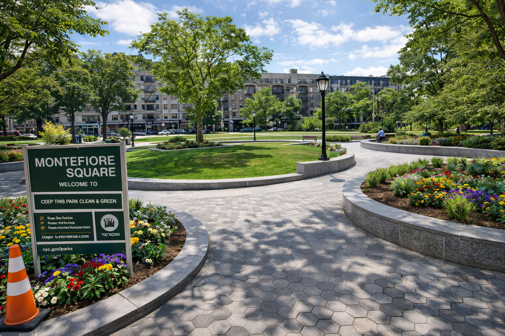

Before
The existing plaza lacks greenery, seating, and strong identity. It functions more as a pass-through space than a destination.

A greener Harlem plaza with community, seating, and wellness space
This redesign transforms Montefiore Square into a vibrant Harlem public space focused on greenery, safety, and community activity. The proposal explores how AI-generated design ideas can improve everyday urban life.
The existing plaza lacks greenery, seating, and strong identity. It functions more as a pass-through space than a destination.

Early concepts introduced planting, vendor areas, and improved pedestrian circulation to activate the space.
The final design creates a lively Harlem plaza with seating, greenery, lighting, and flexible community use.
